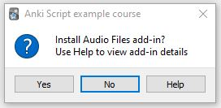
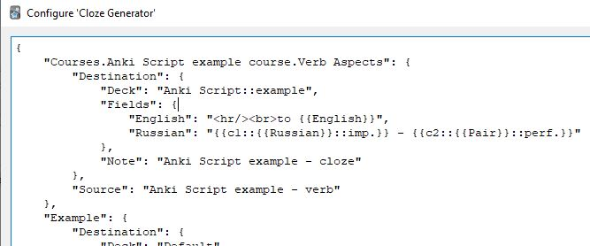

Installation
Addons are installed by scripts using the id number in the script command. This should match the number displayed on
AnkiWeb.
The user is prompted to confirm the installation, with the addon name in the script displayed in the message. The
confirmation dialog is also set up so that using the Help directs the user at the AnkiWeb page for the addon.

A confirmation dialog is used to prevent malicious addons being installed by scripts without a user's knowledge.
Configuration
Scripts can include changes to the configuration of other addons. This lets script authors ensure that other
addons have been properly set up for use with the domain specific / course addon.
Any addon configuration should be defined in a file within the
config directory .
The file should have a .config file extension, with the filename being the name of the addon being configured,
converted to lowercase and with spaces replaced by an underscore.
Currently only addons using the Anki json data format can be configured - for others it is suggested that a page
is displayed at the end of the script providing instructions of what needs to be done by the user.
After an addon configuration has been changed by the script and post-configuration change action defined by the
addon is called. If there is none and Anki needs to be restarted to pick up the change a message can be displayed
to users at the end of the script.
When configuring another addon scripts can either replace the whole configuration, or just change part of it.
To change only a part of an addon's configuration the command includes a 'key', which specifies where the change
is made. The key is actually the path through the addons configuration data, with '/' being used to specify a
nested location (a/b would look for a key 'a', then a key 'b' within the data for a)
As an example the command
configure "Cloze Generator" addin, setting key "Courses.Anki Script example course.Verb Aspects"{
"Destination": {
"Deck": "${verbs}",
"Fields": {
"English": "<hr/><br>to {{English}}",
"Russian": "{{c1::{{Russian}}::imp.}} - {{c2::{{Pair}}::perf.}}"
},
"Note": "${cloze}"
},
"Source": "${verb}"
}
